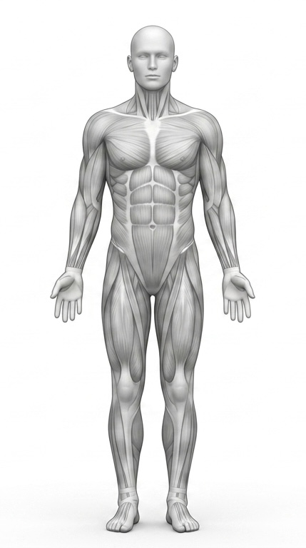

해부학 이미지 위에서 마커를 드래그해 정확한 위치로 옮기세요.
오른쪽 목록에서 항목을 눌러 선택할 수도 있고, 빈 곳을 클릭하면 선택된 마커가 그 자리로 이동합니다.

터미널 없이 쓰는 법
1) 이 파일(calibrate.html)을 index.html과 같은 폴더에 두기
2) 마커를 드래그로 다 맞추기 (전면·후면 둘 다)
3) [새 index.html 내려받기] 클릭 → 좌표가 반영된 파일이 다운로드됨
4) 그 파일을 코드스페이스의 기존 index.html에 덮어쓰기 (드래그 앤 드롭)